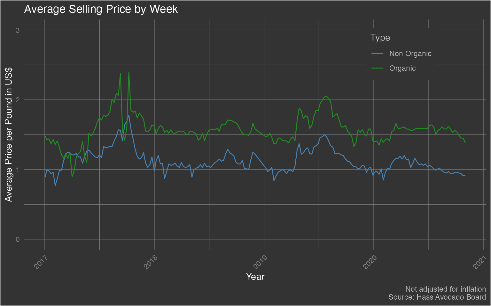
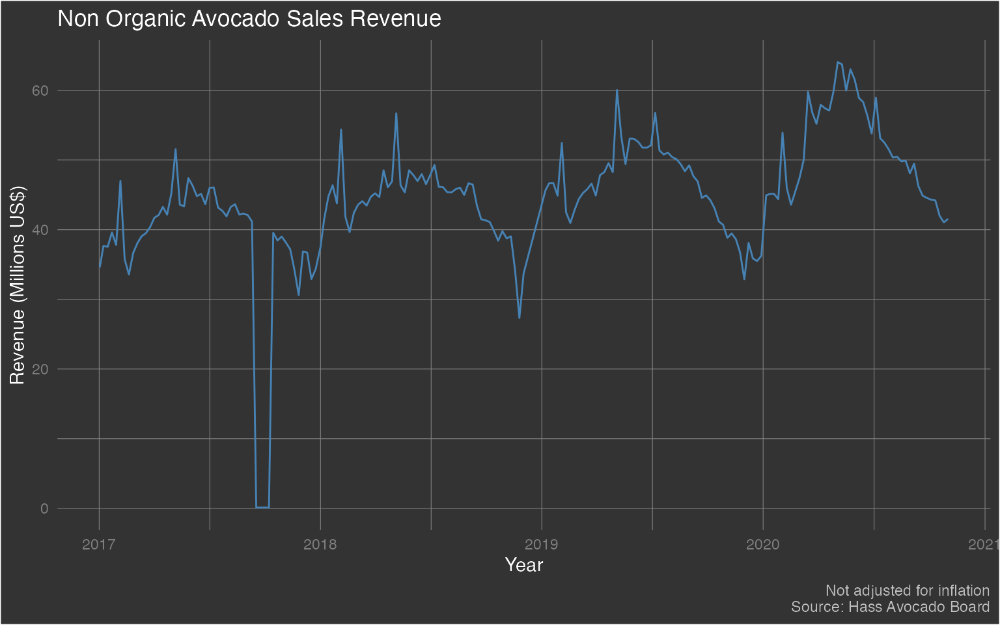

Analyzing Hass USA
b_analyze-hass-cntry.RmdThe {avocado} package provides a weekly summary - starting from January 2017 through November 2020 - of Hass Avocado sales. There are three datasets in this package and let’s start with the dataset hass_usa which focuses on weekly avocado sales in the contiguous US.
Let’s start by loading the package - along with dplyr (for data wrangling) and ggplot (for data visualization) - and exploring it’s structure
library(avocado)
library(dplyr)
#>
#> Attaching package: 'dplyr'
#> The following objects are masked from 'package:stats':
#>
#> filter, lag
#> The following objects are masked from 'package:base':
#>
#> intersect, setdiff, setequal, union
library(ggplot2)
data('hass_usa')
dplyr::glimpse(hass_usa)
#> Rows: 197
#> Columns: 15
#> $ week_ending <dttm> 2017-01-02, 2017-01-08, 2017-01-15, 2017-01-22, 20…
#> $ avg_price_nonorg <dbl> 0.89, 0.99, 0.98, 0.94, 0.96, 0.77, 0.87, 0.99, 0.9…
#> $ plu4046 <dbl> 12707895, 11809728, 12936858, 14254150, 14034076, 2…
#> $ plu4225 <dbl> 14201201, 13856935, 12625665, 14212882, 11683465, 2…
#> $ plu4770 <dbl> 549844.6, 539068.4, 579346.5, 908616.4, 818727.0, 1…
#> $ small_nonorg_bag <dbl> 8551134, 9332972, 9445622, 9462854, 9918256, 125671…
#> $ large_nonorg_bag <dbl> 2802709, 2432259, 2638918, 3231020, 2799961, 361827…
#> $ xlarge_nonorg_bag <dbl> 66933.73, 78840.96, 69077.52, 70871.48, 119095.66, …
#> $ avg_price_org <dbl> 1.48, 1.43, 1.44, 1.37, 1.43, 1.36, 1.41, 1.31, 1.2…
#> $ plu94046 <dbl> 99820.77, 117721.87, 121132.79, 115700.02, 131808.2…
#> $ plu94225 <dbl> 273329.61, 283532.68, 280287.84, 281786.33, 292584.…
#> $ plu94770 <dbl> 4425.75, 8697.35, 8750.08, 6707.82, 3524.96, 2238.7…
#> $ small_org_bag <dbl> 273456.00, 379088.19, 400292.46, 401805.90, 346391.…
#> $ large_org_bag <dbl> 157939.75, 201681.74, 165261.11, 188282.91, 178896.…
#> $ xlarge_org_bag <dbl> 0, 0, 0, 0, 0, 0, 0, 0, 0, 0, 0, 0, 0, 0, 0, 0, 0, …Exploratory Data Analysis
Let’s begin by exploring the following three topics:
- Fluctuation of average selling price
- Non Organic Avocado sales revenue
Fluctuation of Average Selling Price
hass_usa %>%
ggplot(aes(x = week_ending)) +
geom_line(aes(y = avg_price_nonorg, color = 'Non Organic')) +
geom_line(aes(y = avg_price_org, color = 'Organic')) +
scale_color_manual(values = c('steelblue','forestgreen')) +
labs(x = 'Year', y = 'Average Price per Pound in US$', color = 'Type', title = 'Average Selling Price by Week', caption = 'Not adjusted for inflation\nSource: Hass Avocado Board') +
ylim(min = 0, max = 3.0) +
theme(plot.background = element_rect(fill = "grey20"),
plot.title = element_text(color = "#FFFFFF"),
axis.title = element_text(color = "#FFFFFF"),
axis.text.x = element_text(color = 'grey50', angle = 45, hjust = 1),
axis.text.y = element_text(color = 'grey50'),
plot.caption = element_text(color = 'grey75'),
panel.background = element_blank(),
panel.grid.major = element_line(color = "grey50", size = 0.2),
panel.grid.minor = element_line(color = "grey50", size = 0.2),
legend.background = element_rect(fill = 'grey20'),
legend.key = element_rect(fill = 'grey20'),
legend.title = element_text(color = 'grey75'),
legend.text = element_text(color = 'grey75'),
legend.position = c(0.815, 0.85)
) Unsurprisingly, we can see that the average selling price for organic avocados tends to be higher than the average selling price for non-organic avocados. Note how there seems to be a fairly large spike in selling price in late 2017.
Non Organic Avocado Sales Revenue
hass_usa %>%
mutate(
nonorg_rev = (plu4046+plu4225+plu4770+small_nonorg_bag+large_nonorg_bag+xlarge_nonorg_bag) * avg_price_nonorg
) %>%
ggplot(aes(x = week_ending)) +
geom_line(aes(y = nonorg_rev/1000000), color = 'steelblue') +
labs(x = 'Year', y = 'Revenue (Millions US$)', color = 'Type', title = 'Non Organic Avocado Sales Revenue', caption = 'Not adjusted for inflation\nSource: Hass Avocado Board') +
theme(plot.background = element_rect(fill = "grey20"),
plot.title = element_text(color = "#FFFFFF"),
axis.title = element_text(color = "#FFFFFF"),
axis.text.x = element_text(color = 'grey50'),
axis.text.y = element_text(color = 'grey50'),
plot.caption = element_text(color = 'grey75'),
panel.background = element_blank(),
panel.grid.major = element_line(color = "grey50", size = 0.2),
panel.grid.minor = element_line(color = "grey50", size = 0.2),
legend.background = element_rect(fill = 'grey20'),
legend.key = element_rect(fill = 'grey20'),
legend.title = element_text(color = 'grey75'),
legend.text = element_text(color = 'grey75'),
# legend.position = c(0.815, 0.2)
legend.position = 'none'
) We may have switched gears from looking at average selling price to revenue. However, notice the massive drop in revenue in late 2017 - which seems to correspond to the increase in average selling price for the same time period.
Let’s dive further into that ‘dip’.
hass_usa %>%
mutate(
nonorg_rev = (plu4046+plu4225+plu4770+small_nonorg_bag+large_nonorg_bag+xlarge_nonorg_bag) * avg_price_nonorg
) %>%
select(week_ending, nonorg_rev) %>%
filter(week_ending > lubridate::ymd('2017-09-10') & week_ending < lubridate::ymd('2017-10-15')) %>%
ggplot(aes(x = week_ending, y = nonorg_rev)) +
geom_line(color = 'steelblue') +
labs(x = 'Year', y = 'Revenue', color = 'Type', title = 'Non Organic Avocado Sales Revenue', caption = 'Not adjusted for inflation\nSource: Hass Avocado Board') +
theme(plot.background = element_rect(fill = "grey20"),
plot.title = element_text(color = "#FFFFFF"),
axis.title = element_text(color = "#FFFFFF"),
axis.text.x = element_text(color = 'grey50'),
axis.text.y = element_text(color = 'grey50'),
plot.caption = element_text(color = 'grey75'),
panel.background = element_blank(),
panel.grid.major = element_line(color = "grey50", size = 0.2),
panel.grid.minor = element_line(color = "grey50", size = 0.2),
legend.background = element_rect(fill = 'grey20'),
legend.key = element_rect(fill = 'grey20'),
legend.title = element_text(color = 'grey75'),
legend.text = element_text(color = 'grey75'),
legend.position = 'none'
) So we can see that the revenue wasn’t exactly 0. However, it definitely was much lower (way less than a US$1 million). A quick search on the Internet shows that around that time frame, there was a major avocado supply shortage in the US.
So we can see that the revenue wasn’t exactly 0. However, it definitely was much lower (way less than a US$1 million). A quick search on the Internet shows that around that time frame, there was a major avocado supply shortage in the US.